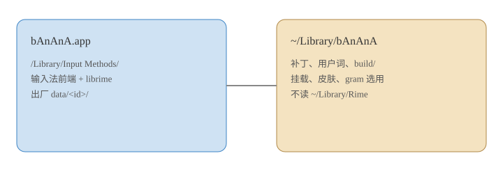

小香蕉 for macOS
版本 1.1.2.5 · 安装包 bAnAnA-1.1.2.5.pkg
输入法装在 /Library/Input Methods/bAnAnA.app。用户数据 ~/Library/bAnAnA。组字走 librime 1.17.0。安装包零 .gram。

版本 1.1.2.5 · 安装包 bAnAnA-1.1.2.5.pkg
输入法装在 /Library/Input Methods/bAnAnA.app。用户数据 ~/Library/bAnAnA。组字走 librime 1.17.0。安装包零 .gram。
